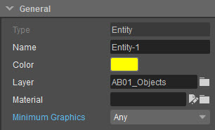
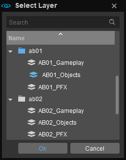
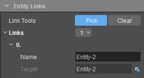

Обзор
Многие объекты внутри Sandbox будут иметь общие свойства, применимые к объекту, поэтому это выйдет за рамки только Entities.
Эта статья также содержит ссылки на страницы, описывающие свойства конкретных объектов и групп объектов, включенных в CryENGINE SDK.
Стандартные параметры
На панели «Стандартные параметры» вы можете настроить стандартные параметры, такие как имя вашего объекта или выбранного в данный момент слоя.
Текстовое поле в верхней части панели позволяет ввести новое имя для вашего объекта. Имя по умолчанию — «ObjectTypeX». На снимке экрана ниже отображается «Винтовка1», поскольку это первый объект-винтовка, размещенный в мире.

К некоторым объектам по умолчанию применяются цветовые схемы, в зависимости от их типа. Цветное поле рядом с текстовым полем открывает окно редактора цветов. Это можно использовать для присвоения отдельным объектам цветовой схемы по вашему выбору, если вы хотите настроить ее.
Если щелкнуть значок «Обзор» рядом с полем «Слой», откроется окно «Выбор слоя», в котором вы сможете поместить объект в соответствующий слой. Текст справа от кнопки слоя сообщает вам, какой слой выбран в данный момент.
Дополнительную информацию об этом см. Level Explorer документация.

Параметры | Описание |
|---|---|
Имя | Название сущности. |
Цвет | Цвет, который отличает объект на панели Level Explorer. |
| Материал | Нажатие кнопки «Обзор» рядом с этим полем откроет браузер, в котором вы сможете выбрать материал для объекта. |
Минимальная графика | Если этот параметр установлен, выбранный объект отображается только в настройках деталей игры с желаемым значением и выше. |
Параметры сущности
Изменение параметров объекта позволяет добавлять к объекту такие эффекты, как ветер и тень, а также переключать такие параметры, как скрытие объекта в игре.
Параметр | Описание |
|---|---|
Только на открытом воздухе | Если этот параметр установлен, объект не будет отображаться, находясь внутри зоны обзора. |
Отбрасывающая тень MinSpec | Если этот объект установлен, он будет отбрасывать тень на выбранное качество и выше. |
LodRatio | Определяет, насколько далеко от текущего положения камеры используются разные модели уровня детализации объекта. |
ViewDistRatio | Определяет, насколько далеко от текущего положения камеры будет отображаться объект. |
HiddenInGame | Если этот параметр установлен, этот объект не будет отображаться в чисто игровом режиме. Полезно для отладки или создания прототипов в Sandbox. |
Получить ветер | Если этот объект установлен, на него будет влиять любая настройка ветра на вашем уровне. |
RenderNearest | Используется для устранения артефактов z-буфера при рендеринге от первого лица. |
NoStaticDecals | Если для этого параметра установлено значение true, надписи на этом объекте отображаться не будут. |
Создано через пул | В основном это используется в сущностях AI для оптимизации памяти. |
Общие параметры объекта
Во многих случаях параметры будут унаследованы от сценариев более высокого уровня, таких как EntityUtils.lua. Ниже приведены некоторые общие параметры, которые вы можете найти в различных объектах.
Параметр | Описание |
|---|---|
CanBreakOthers | Если это правда, сущность может наносить урон другим разрушаемым объектам. |
Фракция | Фракция сущности (см. Фракции). |
HeavyObject | Устарело |
InteractLargeObject | Если это правда, игроки могут инициировать взаимодействие больших объектов (например, захват и удар ногой) с объектом. |
выбираемый | Если это правда, игроки могут «схватить» или поднять объект (см. Выбираемые объекты). |
Отдых | Если это правда, объект не будет появляться в физически «бодрствующем» состоянии. Вместо этого он будет ждать первого физического взаимодействия. |
Сериализация | Если истинный объект загрузит/сохранит свое состояние. |
SmartObjectClass | Указывает тип смарт-объекта объекта (см. Смарт-объекты). |
Годный к употреблению | Если истинная сущность может использоваться игроками (см. Добавление полезной поддержки для сущности). |
UseMessage | Если годный к употреблению верно, это сообщение будет отображаться, когда игроки находятся в пределах досягаемости. Может быть локализованная строка например @use_object. |
Здоровье | |
Неуязвимый | Объект не получает урона, но регистрирует выходной сигнал «Попадание», когда это применимо. |
MaxHealth | Здоровье сущности: какой урон она может получить, прежде чем будет признана «мертвой» и активирует выход. |
OnlyEnemyFire | Будет получать урон только от врага (Фракция-основанный) огонь, только если установлена фракция. |
RenderProxyOptions | |
AnimateOffScreenShadow | Если это правда, анимировать тень объектов за кадром. По умолчанию объекты в теневом проходе не добавляются в активный список. Этот флаг меняет это поведение. Если объект с этим флагом визуализируется в режиме теневого прохода, он остается активным еще 8 кадров. Это позволяет теням объектов за кадром продолжать двигаться вместе с анимацией, которая в противном случае остановилась бы. |
MultiplayerOptions | |
Сетевой | Если истинная физика будет моделироваться на сервере и сериализоваться по сети, в противном случае она будет моделироваться на клиенте. |
Слои материала
DEPRECATED
Свойства сущности
Панель «Свойства объекта» различна для каждого объекта, поскольку каждый объект предлагает разные параметры. Пожалуйста, обратитесь к страницам отдельных объектов для получения дополнительной информации.
Разные параметры объекта
Эта панель содержит параметры, связанные со сценариями сущностей, и другие полезные функции сущностей.
Параметры | Описание |
|---|---|
Редактировать сценарий | Нажатие кнопки «Редактировать сценарий» открывает файл сценария на вашем компьютере. связанная программа и позволяет вам изменить сценарий для выбранного объекта. |
Перезагрузить скрипт | Нажмите «Обновить сценарий», чтобы применить любые изменения, внесенные в сценарий. Это особенно полезно для просмотра эффектов частиц, поскольку перезагрузка активирует их снова. |
Архетип сущности | Если сущность является архетипом сущности, имя этого архетипа сущности появится на кнопке, а нажатие откроет архетип в DataBase Посмотреть. |
Создать | Создайте новый Flow Graph. Более подробную информацию о графиках потока см. Flow Graph документация. |
Список | Перечислить потоковые диаграммы, с которыми связана выбранная сущность. |
Удалить | Если для этого объекта был создан Flow Graph, вы можете удалить этот Flow Graph с помощью этой кнопки. |
Последовательность | Если объект используется в последовательности Track View, здесь будет отображаться имя последовательности. Нажатие на кнопку также откроет последовательность в окне Track View. |
Сохранить состояние | При этом сохраняется физическое состояние выбранного объекта (когда включен AI/Physics). |
Очистить состояние | Очищает любое сохраненное физическое состояние. |
Ссылки на сущности
На панели «Ссылки на сущности» отображаются сущности, связанные с основной сущностью. Создание ссылки на объект — это, по сути, создание динамической ссылки, на которую можно ссылаться в скрипте LUA.
Так, например, если у вас есть объект «Цель миссии», вы можете создать ссылку, на которую можно легко ссылаться в LUA, которая отслеживает заданное количество объектов на карте.
Или, может быть, у вас есть триггер взрыва, связанный с несколькими объектами, который при активации убьет все эти связанные объекты.

Чтобы выбрать цель, нажмите кнопку Выбрать кнопку, а затем выберите нужный объект, чтобы создать ссылку. Вы можете выбрать несколько объектов по одному, пока кнопка все еще активна.
Кнопка «Выбрать цель» будет светиться, пока она активна. Закончив выбор, нажмите ESC или нажмите кнопку еще раз, чтобы деактивировать его.
Панели свойств объекта
Следующие панели свойств видны только для определенных объектов, однако это стандартные панели, которые функционируют одинаково независимо от того, какой объект они изменяют.
Присоединенные объекты
Панель «Прикрепленные объекты» позволяет создавать ссылки на другие объекты в окне просмотра перспективы.
| Вариант | Описание |
|---|---|
| Выбрать | Связывает два объекта: щелкните объект, который вы хотите связать с другим объектом, нажмите кнопку «Выбрать» и, наконец, нужный объект. Вы визуально увидите ссылку в окне просмотра в перспективе и увидите имя объекта в целевом окне. |
| Удалить | Удаляет связь между двумя объектами. Щелкните нужный объект в окне «Цель» и нажмите «Удалить». |
| Выбрать | Выбирает объект из целевого окна. Двойной щелчок по имени объекта в окне «Цель» также выберет объект. |
Параметры формы
Панель «Параметры фигуры» позволяет редактировать область действия фигуры и создавать ссылки на другие объекты в окне просмотра перспективы.
| Параметры | Описание |
|---|---|
| Количество очков | Число точек относится к количеству точек, которые фигура содержит в перспективе. |
| Редактировать фигуру | Нажатие кнопки «Редактировать фигуру» включает режим редактирования фигуры и позволяет редактировать выбранную фигуру. |
| Используйте инструмент преобразования | В режиме редактирования установка флажка «Использовать Transform Gizmo» включит помощник Transform Gizmo. |
| Обратный путь | Кнопка «Обратный путь» используется с такими объектами, как AIPath, и при нажатии она меняет путь AI. Стрелка на экране будет указывать в противоположном направлении, показывая новое направление пути. |
| Сплит | Нажмите кнопку «Разделить» и щелкните две части фигуры, чтобы разделить фигуру и создать новую независимую фигуру. |
| Сбросить высоту | Эта кнопка сгладит форму и все остальные точки до высоты выбранной точки. |
| Выбрать | Связывает фигуру с объектом. Щелкните фигуру, которую вы хотите связать с другим объектом, нажмите кнопку «Выбрать» и, наконец, нужный объект. Вы визуально увидите ссылку в окне просмотра в перспективе и увидите имя объекта в целевом окне. |
| Удалить | Удаляет связь между выбранной фигурой и объектом. Щелкните нужный объект в окне «Цель» и нажмите «Удалить». |
| Выбрать | Выбирает объект из целевого окна. Двойной щелчок по имени объекта в целевом окне также выберет объект. |